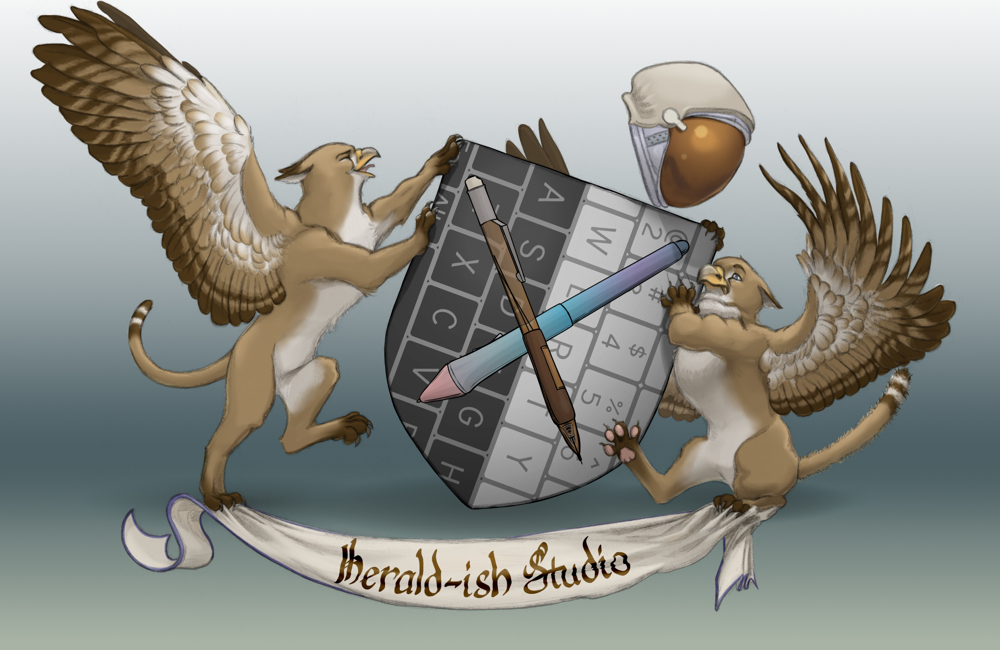

Kestrel Craig
|
|
|

TestimonialsKestrel has such an eye for detail! The notes Kestrel has provided have helped me craft several books. Fantasy, Thriller, Adult, Young Adult, and all the other genres I write she can improve anything she touches. Kestrel always has helpful ideas and does not hold back on letting me know when something is lacking in my story which I appreciate so much! Kestrel’s honesty in crafting stories is amazing. I trust Kestrel with my words not only because she is so thorough with her critiques, but because she too is a writer who tells amazing stories that get you wrapped up in the worlds she creates. Having Kestrel on my team is like having someone rooting for you from the very beginning of your book. Kestrel wants your words to shine as much as she wants her own words to shine so she doesn’t mince words when something needs work, so there’s no guessing on your end as to what needs to be fixed, and I can’t tell you how helpful this is to have not only someone you trust, but having someone who is also a phenomenal writer, too. Ten out of Ten for Kestrel. I recommend her highly (though I’m like a little bit, ‘no don’t use Kestrel because then Kestrel won’t have time for me!’) All kidding aside, Kestrel is someone you can trust with your words, and she is a master at what she does.
- Carmen D.Kestrel has worked with me on two manuscripts so far, and I’m very grateful for his insightful input! He’s quick to spot logical inconsistencies, worldbuilding weaknesses, or unconvincing characterisation. He’s always open to talking through solutions while taking into account my intent as the author. I can always rely on him for honest and constructive feedback on how to tell my stories the best way I can.
- Leon T.Kestrel has helped me work on six books and several short stories over the last several years. She always has very insightful suggestions on where to add additional world-building and character beats. Kestrel is exceedingly good at finding moments that could use a little more emotional oomph--at finding where to twist the knife to give characters and readers the catharsis needed to make a good book great. While Kestrel doesn't hesitate to say what isn't working, she also doesn't stint on pointing out what is working, and she's always very eager to hear what an author's intention is so that brainstorming ways to improve makes sure the final product is aligned with the author vision. You can't go wrong getting Kestrel's eyes on your work.
- Jamie P.Kestrel has improved my writing in so many ways that listing them all would take a long time. His best skill is making me think about my work in a new light, and considering aspects of it I hadn't thought of before. He's upfront and direct about what needs to be changed too - you'll be getting 'this isn't working, because of this thing, and it needs this thing to fix it'. He's also incredibly good at identifying weaknesses in character motivation and worldbuilding; 'he would not say that' from other editors is more likely to be 'what would it take to make him say that?' under his guidance and it's a lifeline when you're trying to juggle an uncooperative cast of characters and a brand new world! My worldbuilding and characterisation are stronger for his input.
- Kazimir D.